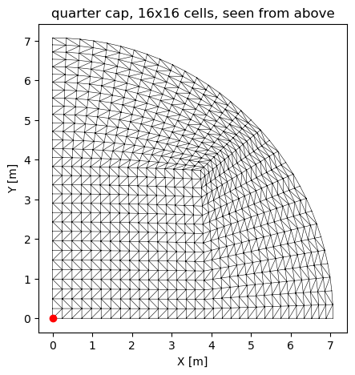
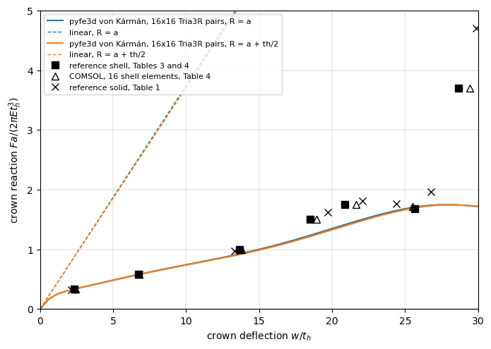
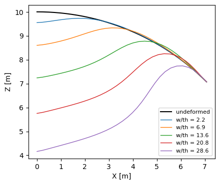
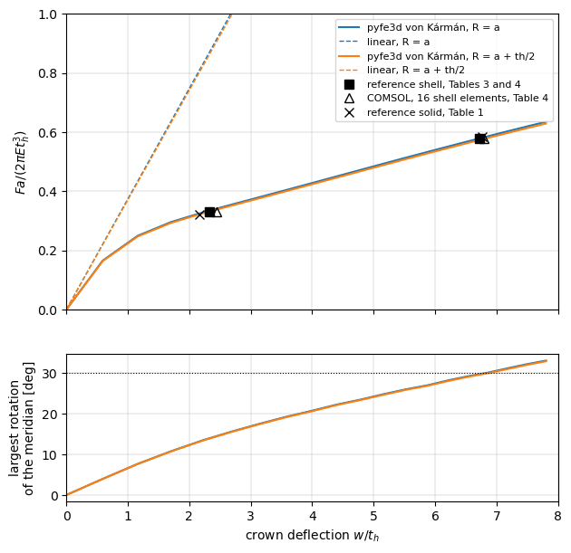
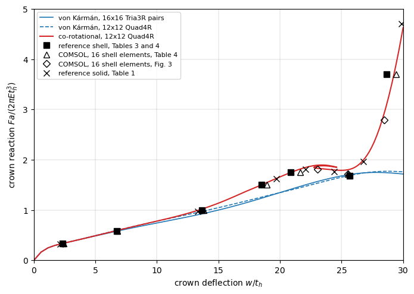
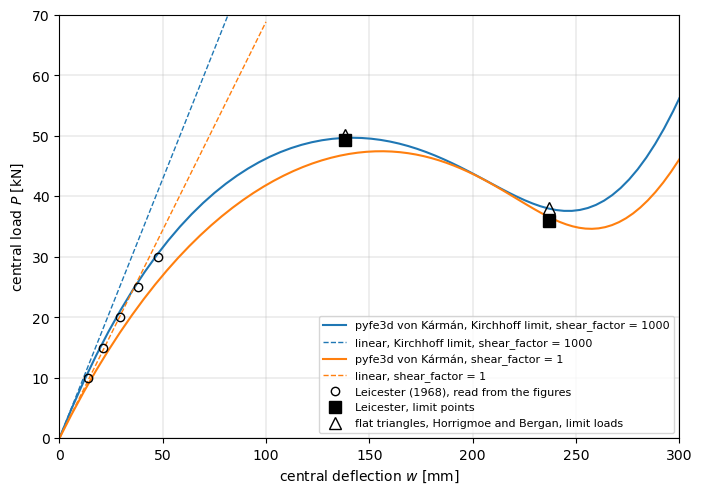
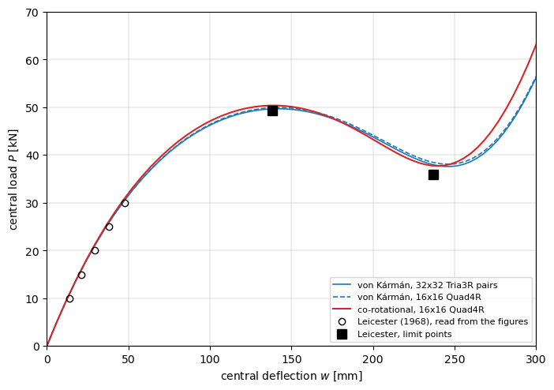

Tutorial: shells pressed down by a prescribed displacement, Riks’ method#
Two shells are pressed down by a deflection prescribed at their centre, without any applied load, and the reaction is traced against the deflection with Riks’ arc-length method of pyfe3d.solver, with Analysis(..., bu=bu, uk=uk) and calc_fext returning zeros, see the user guide page Non-linear static analyses. The non-linear reaction is compared with the linear one and with published results:
A deep clamped spherical cap driven far past its inversion, the benchmark of Lyons, P. and Holsgrove, S., Finite Element Benchmarks for 2D Beams and Axisymmetric Shells Involving Geometric Non-Linearity, NAFEMS, 2005 (no DOI), whose reference values are tabulated in the open verification model COMSOL, Spherical Cap with Central Point Load, COMSOL Multiphysics 6.4, Application Library, Structural Mechanics Module, Verification Examples, doc.comsol.com: the problem on p. 2, the reference values in Tables 1 to 4, pp. 6-7, the parameters and nondimensional variables on p. 9, the geometry on pp. 9-10 and the shell offset on p. 13. The whole path shows where the von Kármán strains of the pyfe3d shells stop being valid; a separate comparison is restricted to the moderate rotations.
A hinged shallow spherical shell on a square base, whose snap-through stays within moderate rotations: Fig. 17 (p. 33) of Horrigmoe, G. and Bergan, P. G., Nonlinear analysis of free-form shells by flat finite elements, Computer Methods in Applied Mechanics and Engineering, 16(1), 11-35, 1978, doi:10.1016/0045-7825(78)90030-0, and Fig. 4 (p. 1688) of Bergan, P. G., Horrigmoe, G., Krakeland, B. and Soreide, T. H., Solution techniques for non-linear finite element problems, International Journal for Numerical Methods in Engineering, 12(11), 1677-1696, 1978, doi:10.1002/nme.1620121106, both with the series solution of Leicester, R. H., Finite deformations of shallow shells, Journal of the Engineering Mechanics Division, ASCE, 94(EM6), 1409-1423, 1968 (not consulted here; read from the figures).
The arc-length method is that of Riks, E., An incremental approach to the solution of snapping and buckling problems, International Journal of Solids and Structures, 15(7), 529-551, 1979, doi:10.1016/0020-7683(79)90081-7.
The models are built by the functions of tests/test_dome_prescribed_displacement.py, which also runs the comparisons of this notebook as tests. Each case has one function returning its path for a given formulation, collected in the dictionary FORMULATIONS: the von Kármán strains of the elements, cap_path and leicester_path, and the co-rotational kinematics of pyfe3d.corotational.CorotationalModel with kinematics='corotational', valid for large rotations with small
strains, cap_path_cr and leicester_path_cr, both with Quad4R. The co-rotational paths are compared with the references in the sections Large rotations: the co-rotational kinematics of each case.
The cells below run in about eight minutes.
[1]:
%matplotlib inline
import os
import sys
import time
sys.path.insert(0, '..')
sys.path.insert(0, os.path.join('..', 'tests'))
import numpy as np
import matplotlib.pyplot as plt
import pyfe3d
from pyfe3d import DOF
from pyfe3d.solver import solve
from test_dome_prescribed_displacement import (CAP, TABLE_SHELL_REF,
TABLE_SHELL_COMSOL16, TABLE_SOLID_REF, LEICESTER, LEICESTER_RISING,
LEICESTER_UPPER, LEICESTER_LOWER, HORRIGMOE_LIMIT_LOADS, cap_model,
leicester_model, load_factor, run_cap, run_leicester, limit_points,
line_y0, meridian_rotation, compare, run_cap_corotational,
run_leicester_corotational, branches)
print('pyfe3d', pyfe3d.__version__)
a, th = CAP['a'], CAP['th']
T_START = time.time()
pyfe3d 0.12.0
[2]:
def rotations(p):
# NOTE largest change of slope of the line Y = 0 at each point of the path
line = line_y0(p['model'])
return np.array([0.] + [meridian_rotation(p['model'], c, line)
for c in p['an'].cs])
def cap_path(n, R, **kwargs):
r"""Path of the cap with n x n cells per block and mid-surface radius R:
w/th, F_n, the linear slope, the rotations and the analysis"""
w, Fn, slope, an, model, dofw = run_cap(n, R, **kwargs)
p = dict(w=w, F=Fn, slope=slope, an=an, model=model, dofw=dofw)
p['rot'] = rotations(p)
return p
def leicester_path(n, shear_factor=1., **kwargs):
r"""Path of the hinged shell with n x n cells on the quarter: w [mm],
P [kN], the linear slope [kN/mm], the rotations and the analysis"""
w, P, slope, an, model, dofw = run_leicester(n, shear_factor, **kwargs)
p = dict(w=w, F=P, slope=slope, an=an, model=model, dofw=dofw)
p['rot'] = rotations(p)
return p
def cap_path_cr(n, R, **kwargs):
r"""As cap_path, with Quad4R and kinematics='corotational'"""
w, Fn, slope, an, model, dofw = run_cap_corotational(n, R, **kwargs)
p = dict(w=w, F=Fn, slope=slope, an=an, model=model, dofw=dofw)
p['rot'] = rotations(p)
return p
def leicester_path_cr(n, shear_factor=1., **kwargs):
r"""As leicester_path, with Quad4R and kinematics='corotational'"""
w, P, slope, an, model, dofw = run_leicester_corotational(n, shear_factor, **kwargs)
p = dict(w=w, F=P, slope=slope, an=an, model=model, dofw=dofw)
p['rot'] = rotations(p)
return p
#: one entry per shell formulation
FORMULATIONS = {'von Kármán': dict(cap=cap_path, leicester=leicester_path),
'co-rotational': dict(cap=cap_path_cr, leicester=leicester_path_cr)}
1. The clamped spherical cap (NAFEMS)#
The benchmark#
From the COMSOL model: radius \(a = 10\) m, thickness \(t_h = 0.20384\) m, sector (half-)angle \(\pi/4\), edge fixed (p. 2); \(E = 210\) GPa, \(\nu = 0.3\) (p. 9). The results are given with the nondimensional load and crown deflection (p. 9)
with \(F\) the point load on the whole cap and \(w\) the downward deflection of the crown. Tables 3 and 4 (p. 7), with 8 and 16 axisymmetric shell elements, list the same reference values of Lyons and Holsgrove (2005), the deflection at seven loads, together with the deflections computed by COMSOL at the same loads; Table 1 (p. 6) lists the reference values of a solid model. The reference load rises to 1.757 at \(w/t_h = 20.887\), passes a maximum that is not tabulated, drops to 1.678 at \(w/t_h = 25.668\) and then rises steeply, the cap being inverted. COMSOL’s shell with 16 elements gives 1.806 at \(w/t_h = 23.06\), near its maximum, and 1.717 at 25.51, near its minimum (Fig. 3, p. 5, and Fig. 4, p. 6), and COMSOL notes that a refined solid model supports its own values rather than the reference (p. 8). COMSOL’s deflections are 0.5 to 5 % larger than the reference, e.g. 2.445 against 2.326 at the first load, the scatter of the published results.
Geometry. The COMSOL geometry is a circular arc of radius \(a + t_h\) with one layer of thickness \(t_h\) (pp. 9-10), i.e. the solid spans the radii \(a\) to \(a + t_h\), and the shell is given the offset “Top surface on boundary” with \(d_0 = t_h\), “to model the solid midplane” (p. 13): COMSOL’s shell mid-surface radius is \(a + t_h/2\). Whether the reference of Lyons and Holsgrove (2005), not available here, takes \(a\) as the mid-surface radius or as the inner radius is not known. Both are computed below, the mid-surface radius \(R = a\) and \(R = a + t_h/2\), always with \(a = 10\) m in \(F_n\).
Tolerance. 5 % on the load at the deflections of the reference, the published results scattering by about 4 %.
[3]:
TOL = 0.05
print('Tables 3 and 4: reference (Lyons and Holsgrove) and COMSOL 16 shell elements')
print('%8s %10s %14s' % ('F_n', 'w/th ref', 'w/th COMSOL16'))
for (F, w), (Fc, wc) in zip(TABLE_SHELL_REF, TABLE_SHELL_COMSOL16):
print('%8.3f %10.3f %8.3f%s' % (F, w, wc, '' if Fc == F else ' (at F_n = %.3f)' % Fc))
print('rise of the cap a (1 - cos 45 deg) = %.3f m = %.1f th'
% (a*(1 - np.cos(CAP['alpha'])), a*(1 - np.cos(CAP['alpha']))/th))
Tables 3 and 4: reference (Lyons and Holsgrove) and COMSOL 16 shell elements
F_n w/th ref w/th COMSOL16
0.332 2.326 2.445
0.580 6.720 6.800
0.994 13.642 13.800
1.502 18.487 18.945
1.757 20.887 21.640
1.678 25.668 25.500 (at F_n = 1.717)
3.705 28.680 29.410
rise of the cap a (1 - cos 45 deg) = 2.929 m = 14.4 th
The last reference point, \(w/t_h = 28.68\), is about twice the rise of the cap: the cap is driven to its mirror image.
The model#
The deformation is axisymmetric; one quarter of the cap is modelled, with the symmetry conditions \(u = r_y = r_z = 0\) on the plane \(X = 0\) and \(v = r_x = r_z = 0\) on \(Y = 0\), the edge clamped (all six dofs), and the crown deflection \(w\) prescribed: it is a known dof, bu[dofw] = False, with uk[dofw] \(= -30\, t_h\) at the load factor \(\lambda = 1\). The quarter disc is meshed with three blocks of \(n \times n\) cells, a square around the crown
and two blocks up to the edge, mapped to the sphere at the polar angle \(\beta = \rho \pi/4\), where \(\rho\) is the distance to the crown in the disc; along the meridians on the planes of symmetry there are \(2 n\) elements. Each cell is split into two Tria3R along alternating diagonals, see Choosing an element for the element and the next section for why it is used here.
There is no load: calc_fext of Model returns the zero vector and the analysis is displacement controlled, the prescribed deflection growing as \(\lambda\) uk. The reaction of the quarter at the crown is calc_fint(u)[dofw], which is multiplied by 4 for the whole cap. For the linear analysis, static(NLgeom=False), the reaction is \(\boldsymbol{K}_{C0} \boldsymbol{u}\) at that dof: calc_fint of Model gives the non-linear internal forces.
[4]:
model, bu, dofw = cap_model(16, a)
print('16x16 cells: %d Tria3R, %d nodes, %d dofs, %d free' % (
len(model.elements), model.N//DOF, model.N, bu.sum()))
xyz = model.x.reshape(-1, 3)
fig, ax = plt.subplots(figsize=(5, 5))
tri = np.array([[e.n1, e.n2, e.n3] for e in model.elements])
ax.triplot(xyz[:, 0], xyz[:, 1], tri, 'k-', lw=0.4)
ax.plot(0, 0, 'ro')
ax.set_aspect('equal')
ax.set_xlabel('X [m]')
ax.set_ylabel('Y [m]')
ax.set_title('quarter cap, 16x16 cells, seen from above')
plt.show()
16x16 cells: 1536 Tria3R, 817 nodes, 4902 dofs, 4512 free

Choice of element#
The point load makes the crown the critical region; its elements are the smallest of the mesh, of the order of the thickness. The linear crown stiffness, the slope \(\mathrm{d}F_n/\mathrm{d}(w/t_h)\), against the mesh, for Quad4 (the recommended quadrilateral) and Tria3R (the recommended triangle):
[5]:
def linear_slope(n, R, element):
model, bu, dofw = cap_model(n, R, element)
K = model.KC0
bk = ~bu
u = np.zeros(model.N)
u[dofw] = -th
u[bu] = solve(K[bu][:, bu], -K[bu][:, bk] @ u[bk])
return load_factor(-4*(K @ u)[dofw])
meshes = [8, 12, 16, 20, 24, 32]
slopes = {}
print('%5s | %8s | %8s' % ('n', 'Quad4', 'Tria3R'))
for n in meshes:
sq = linear_slope(n, a, 'Quad4')
st = linear_slope(n, a, 'Tria3R')
slopes[n] = (sq, st)
print('%5d | %8.4f | %8.4f' % (n, sq, st))
sq = np.array([slopes[n][0] for n in meshes])
st = np.array([slopes[n][1] for n in meshes])
print('decreasing monotonically: Quad4 %s, Tria3R %s'
% (np.all(np.diff(sq) < 0), np.all(np.diff(st) < 0)))
n | Quad4 | Tria3R
8 | 0.3802 | 0.4107
12 | 0.3675 | 0.3847
16 | 0.3618 | 0.3740
20 | 0.3585 | 0.3682
24 | 0.3562 | 0.3644
32 | 0.3531 | 0.3598
decreasing monotonically: Quad4 True, Tria3R True
Both elements converge monotonically, from above: Quad4, whose transverse shear uses the assumed strains of the MITC4 element at any thickness (see the Notes of pyfe3d.quad4), from 0.3802 with 8x8 cells to 0.3531 with 32x32, and Tria3R from 0.4107 to 0.3598, 1.9 % stiffer than Quad4 on the finest mesh. Tria3R is used below, as in the tests. The slow decrease that remains is expected: under a point load the transverse shear force is \(Q = F/(2 \pi r)\) near the load, from
the vertical equilibrium of a disc of radius \(r\), so that with a finite transverse shear stiffness the shear deflection grows as \(\ln r\), and the deflection under the load of a shear-deformable shell is singular; the mesh resolves it only logarithmically.
Riks’ arc-length method#
NL_method = 'arc_length_riks', initialInc = maxInc = 0.02: the first arc length corresponds to the load factor increment 0.02 along the initial tangent, \(\Delta (w/t_h) = 0.6\), and the arc length is not allowed to grow beyond it, such that the path is sampled finely enough to interpolate it at the reference deflections. maxArcLength is raised such that the analysis stops only at \(\lambda = 1\), \(w/t_h = 30\). The crown deflection grows monotonically here, so
displacement control alone would also pass the limit load of the reaction; the arc-length method would also follow a path whose prescribed deflection turns back. The analysis is run for the two mid-surface radii with 16x16 cells, with the von Kármán strains of the elements; the co-rotational kinematics follow in a later section.
[6]:
cap_paths = {}
for form in ['von Kármán']:
funcs = FORMULATIONS[form]
for label, R in [('R = a', a), ('R = a + th/2', a + th/2)]:
t0 = time.time()
p = funcs['cap'](16, R)
cap_paths[form, label] = p
print('%s, %-13s: %d increments, last load factor %.3f, w/th = %.2f, '
'linear slope %.4f, %.0f s' % (form, label, len(p['an'].increments),
p['an'].increments[-1], p['w'][-1], p['slope'], time.time() - t0))
print(' w/th increases monotonically: %s' % np.all(np.diff(p['w']) > 0))
von Kármán, R = a : 127 increments, last load factor 1.000, w/th = 30.00, linear slope 0.3740, 76 s
w/th increases monotonically: True
von Kármán, R = a + th/2 : 127 increments, last load factor 1.000, w/th = 30.00, linear slope 0.3706, 77 s
w/th increases monotonically: True
The whole path#
The path is interpolated linearly at the deflections of the reference, and the relative difference of the load is listed with the largest rotation of the meridian \(Y = 0\) at that point, the largest change of slope of the segments between its nodes, from their deformed positions:
[7]:
rel = {k: compare(p['w'], p['F']) for k, p in cap_paths.items()}
rot_ref = {k: np.interp(TABLE_SHELL_REF[:, 1], p['w'], p['rot']) for k, p in cap_paths.items()}
keys = list(cap_paths)
print('%8s %8s | %s' % ('w/th', 'F_n ref', ' | '.join('%26s' % ('%s, %s' % k) for k in keys)))
for i, (F, w) in enumerate(TABLE_SHELL_REF):
vals = ['%8.4f %+6.1f %% %5.0f deg' % (F*(1 + rel[k][i]), 100*rel[k][i], rot_ref[k][i])
for k in keys]
print('%8.3f %8.3f | %s' % (w, F, ' | '.join(vals)))
w/th F_n ref | von Kármán, R = a | von Kármán, R = a + th/2
2.326 0.332 | 0.3345 +0.8 % 14 deg | 0.3313 -0.2 % 14 deg
6.720 0.580 | 0.5787 -0.2 % 30 deg | 0.5733 -1.2 % 30 deg
13.642 0.994 | 0.9229 -7.1 % 50 deg | 0.9115 -8.3 % 49 deg
18.487 1.502 | 1.2337 -17.9 % 62 deg | 1.2139 -19.2 % 62 deg
20.887 1.757 | 1.4145 -19.5 % 68 deg | 1.3925 -20.7 % 67 deg
25.668 1.678 | 1.7068 +1.7 % 78 deg | 1.6931 +0.9 % 77 deg
28.680 3.705 | 1.7416 -53.0 % 86 deg | 1.7428 -53.0 % 85 deg
[8]:
fig, ax = plt.subplots(figsize=(8, 5.5))
for (k, p), c in zip(cap_paths.items(), ['C0', 'C1', 'C2', 'C3']):
ax.plot(p['w'], p['F'], '-', color=c, lw=1.5,
label='pyfe3d %s, 16x16 Tria3R pairs, %s' % k)
ax.plot([0, 30], [0, 30*p['slope']], '--', color=c, lw=1,
label='linear, %s' % k[1])
ax.plot(TABLE_SHELL_REF[:, 1], TABLE_SHELL_REF[:, 0], 'ks', ms=7,
label='reference shell, Tables 3 and 4')
ax.plot(TABLE_SHELL_COMSOL16[:, 1], TABLE_SHELL_COMSOL16[:, 0], 'k^',
mfc='none', ms=7, label='COMSOL, 16 shell elements, Table 4')
ax.plot(TABLE_SOLID_REF[:, 1], TABLE_SOLID_REF[:, 0], 'kx', ms=7,
label='reference solid, Table 1')
ax.set_xlim(0, 30)
ax.set_ylim(0, 5)
ax.set_xlabel('crown deflection $w/t_h$')
ax.set_ylabel(r'crown reaction $F a/(2 \pi E t_h^3)$')
ax.legend(loc='upper left', fontsize=8)
ax.grid(True, lw=0.3)
plt.show()

The non-linear reaction falls below the linear one from the start: the cap softens. Up to \(w/t_h = 6.72\) the path agrees with the reference; at \(w/t_h = 13.64\) it is more than 5 % below, then about 20 % below before the limit load of the reference, and pyfe3d does not find the steep stiffening of the inverted cap: the last reference point, \(F_n = 3.705\) at \(w/t_h = 28.68\), is about twice the computed load. The solver itself reaches \(w/t_h = 30\), the load factor 1.0; the departure comes from the kinematics of the elements.
The shell elements of pyfe3d use the von Kármán membrane strains in the frame of each undeformed element, valid for moderate rotations, see Choosing an element and the cantilever under an end moment in Geometrically non-linear benchmarks. The rotations listed above exceed 30 degrees beyond \(w/t_h \approx 7\), where the path starts to depart from the reference, and reach 85 degrees when the cap is inverted: far outside the range of the von Kármán strains, and a shell formulation for large rotations is needed for the whole path, see the co-rotational kinematics below. The largest circumferential displacement over the crown deflection, which vanishes for an axisymmetric deformation, and the deformed meridian, without amplification:
[9]:
p = cap_paths['von Kármán', 'R = a']
model, an, dofw = p['model'], p['an'], p['dofw']
xyz = model.x.reshape(-1, 3)
rho = np.hypot(xyz[:, 0], xyz[:, 1])
ut_max = max(np.abs((-c.reshape(-1, DOF)[:, 0]*xyz[:, 1]
+ c.reshape(-1, DOF)[:, 1]*xyz[:, 0])/np.where(rho > 0, rho, 1.)).max()
/abs(c[dofw]) for c in an.cs)
print('largest |u_t|/w along the path: %.1e' % ut_max)
meridian = line_y0(model)
fig, ax = plt.subplots(figsize=(8, 4))
ax.plot(xyz[meridian, 0], xyz[meridian, 2], 'k-', lw=1.5, label='undeformed')
for (F, wr), c in zip(TABLE_SHELL_REF[[0, 1, 2, 4, 6]], ['C0', 'C1', 'C2', 'C3', 'C4']):
i = int(np.argmin(abs(p['w'][1:] - wr)))
u = an.cs[i].reshape(-1, DOF)
ax.plot(xyz[meridian, 0] + u[meridian, 0], xyz[meridian, 2] + u[meridian, 2],
'-', color=c, lw=1, label='w/th = %.1f' % p['w'][i + 1])
ax.set_aspect('equal')
ax.set_xlabel('X [m]')
ax.set_ylabel('Z [m]')
ax.legend(fontsize=8)
plt.show()
largest |u_t|/w along the path: 2.0e-03

The moderate-rotation range#
The comparison with the reference is restricted here to the points where the largest rotation of the meridian is below 35 degrees. The rotations at the reference points, listed above, give this range: \(w/t_h = 2.326\) and 6.720, with 14 and 30 degrees. The point \(w/t_h = 13.64\) is not included: its rotation is about 50 degrees, and its load is 7 to 8 % below the reference, outside the tolerance; any limit between 30 and 50 degrees gives the same two points. The tolerance is 5 %, as above. The lower plot shows the largest rotation along the path: the 30 degrees are reached at \(w/t_h \approx 6.8\).
[10]:
ROT_LIMIT = 35.
fig, (ax, ax2) = plt.subplots(2, 1, figsize=(7, 7), sharex=True,
gridspec_kw=dict(height_ratios=[2, 1]))
for (k, p), c in zip(cap_paths.items(), ['C0', 'C1', 'C2', 'C3']):
inside = rot_ref[k] < ROT_LIMIT
print('%s, %s: points %s within %.0f %%: %s' % (k + (
TABLE_SHELL_REF[inside, 1], 100*TOL, ', '.join('%+.1f %%' % (100*r)
for r in rel[k][inside]))))
m = p['w'] <= 8.
ax.plot(p['w'][m], p['F'][m], '-', color=c, lw=1.5, label='pyfe3d %s, %s' % k)
ax.plot([0, 8], [0, 8*p['slope']], '--', color=c, lw=1, label='linear, %s' % k[1])
ax2.plot(p['w'][m], p['rot'][m], '-', color=c, lw=1.5)
ax.plot(TABLE_SHELL_REF[:2, 1], TABLE_SHELL_REF[:2, 0], 'ks', ms=7,
label='reference shell, Tables 3 and 4')
ax.plot(TABLE_SHELL_COMSOL16[:2, 1], TABLE_SHELL_COMSOL16[:2, 0], 'k^',
mfc='none', ms=7, label='COMSOL, 16 shell elements, Table 4')
ax.plot(TABLE_SOLID_REF[:2, 1], TABLE_SOLID_REF[:2, 0], 'kx', ms=7,
label='reference solid, Table 1')
ax.set_ylim(0, 1.)
ax.set_ylabel(r'$F a/(2 \pi E t_h^3)$')
ax.legend(fontsize=8)
ax.grid(True, lw=0.3)
ax2.axhline(30., color='k', lw=0.8, ls=':')
ax2.set_xlim(0, 8)
ax2.set_xlabel('crown deflection $w/t_h$')
ax2.set_ylabel('largest rotation\nof the meridian [deg]')
ax2.grid(True, lw=0.3)
plt.show()
von Kármán, R = a: points [2.326 6.72 ] within 5 %: +0.8 %, -0.2 %
von Kármán, R = a + th/2: points [2.326 6.72 ] within 5 %: -0.2 %, -1.2 %

Mesh convergence#
The loads at the two points of the moderate-rotation range against the mesh, for \(R = a\), with the analysis stopped at \(w/t_h = 7\):
[11]:
conv = {}
for n in [8, 12, 16, 24]:
t0 = time.time()
w, Fn, slope, an, model, dofw = run_cap(n, a, w_max=7., initialInc=0.05,
maxInc=0.05)
conv[n] = compare(w, Fn)
print('%2dx%-2d cells: F_n %.4f (%+.1f %%), %.4f (%+.1f %%), %.0f s' % (
n, n, TABLE_SHELL_REF[0, 0]*(1 + conv[n][0]), 100*conv[n][0],
TABLE_SHELL_REF[1, 0]*(1 + conv[n][1]), 100*conv[n][1],
time.time() - t0))
8x8 cells: F_n 0.3571 (+7.5 %), 0.6300 (+8.6 %), 3 s
12x12 cells: F_n 0.3404 (+2.5 %), 0.5922 (+2.1 %), 9 s
16x16 cells: F_n 0.3346 (+0.8 %), 0.5787 (-0.2 %), 19 s
24x24 cells: F_n 0.3302 (-0.6 %), 0.5688 (-1.9 %), 58 s
The loads decrease with the mesh, at \(w/t_h = 6.72\) by 6.0, 2.3 and 1.7 % at each refinement, and are within 5 % of the reference from 12x12 cells; with 8x8 cells they are 7.5 and 8.6 % too high. Measured separately on 2026-10-30, 32x32 cells give \(F_n = 0.3284\) and \(0.5650\), -1.1 and -2.6 %, with \(R = a\), and \(0.3253\) and \(0.5596\), -2.0 and -3.5 %, with \(R = a + t_h/2\). The decrease slows down without stopping, as the linear crown stiffness above, because of the singular shear deflection under the point load; within the tolerance, the 16x16 mesh of the whole path represents the converged values of the moderate-rotation range.
Large rotations: the co-rotational kinematics#
The co-rotational kinematics, kinematics='corotational' of CorotationalModel, remove the rigid rotation of each element before its linear strains are evaluated, and allow large rotations with small strains; the nodal rotations are total rotation vectors, valid below one revolution, far from the rotations of this cap. They are used here with Quad4R, whose quadrilaterals, warped on the sphere, are linked to their nodes with rigid offsets, the default warping='offsets' of
CorotationalShell. 12x12 cells (432 Quad4R), mid-surface radius \(R = a\), are used. For a comparison with the same element and mesh, the von Kármán path of Quad4R is traced as well (run_cap(..., element='Quad4R')).
Past the limit load the co-rotational crown deflection turns back: Riks’ method follows a path along which the prescribed deflection decreases, a snap-back of the prescribed degree-of-freedom, before the cap inverts and the deflection grows again. The path is therefore compared with the reference on its first branch, up to the first decrease of \(w\), and on its last branch, after the last decrease, with branches() of the tests.
Tolerance: 5 % on the load at the deflections of the reference, as above.
[12]:
# NOTE COMSOL, 16 shell elements, Fig. 3 (p. 5): F_n and w/th
COMSOL_FIG3 = np.array([[1.806, 23.06], [1.717, 25.51], [2.787, 28.45]])
t0 = time.time()
p = FORMULATIONS['co-rotational']['cap'](12, a)
cap_cr = p
print('co-rotational, 12x12 Quad4R, R = a: %d increments, last load factor %.3f, '
'%.0f s' % (len(p['an'].increments), p['an'].increments[-1], time.time() - t0))
t0 = time.time()
q = cap_path(12, a, element='Quad4R')
cap_vk_q = q
print('%s, 12x12 Quad4R, R = a: %d increments, %.0f s' % (
'von Kármán', len(q['an'].increments), time.time() - t0))
first, last = branches(p['w'])
print('co-rotational: w/th decreases between %.2f and %.2f' % (
p['w'][first][-1], p['w'][last][0]))
rel_cr = np.full(len(TABLE_SHELL_REF), np.nan)
r = compare(p['w'][first], p['F'][first])
rel_cr[:r.size] = r
on_last = TABLE_SHELL_REF[:, 1] >= p['w'][last][0]
rel_cr[on_last] = np.interp(TABLE_SHELL_REF[on_last, 1], p['w'][last],
p['F'][last])/TABLE_SHELL_REF[on_last, 0] - 1
rot_cr = np.interp(TABLE_SHELL_REF[:, 1], p['w'][first], p['rot'][first])
rot_cr[on_last] = np.interp(TABLE_SHELL_REF[on_last, 1], p['w'][last], p['rot'][last])
rel_q = compare(q['w'], q['F'])
rel_t = rel['von Kármán', 'R = a']
print('%8s %8s | %31s | %22s | %22s' % ('w/th', 'F_n ref', 'co-rotational, Quad4R',
'von Kármán, Quad4R', 'von Kármán, Tria3R'))
for i, (F, w) in enumerate(TABLE_SHELL_REF):
print('%8.3f %8.3f | %8.4f %+7.1f %% %6.0f deg | %+7.1f %% %10s | %+7.1f %%' % (
w, F, F*(1 + rel_cr[i]), 100*rel_cr[i], rot_cr[i], 100*rel_q[i], '',
100*rel_t[i]))
i_lim = np.argmax(p['F'][first])
print('co-rotational limit load %.3f at w/th = %.2f; COMSOL, 16 shell elements, '
'Fig. 3: %.3f at %.2f' % (p['F'][first][i_lim], p['w'][first][i_lim],
*COMSOL_FIG3[0]))
w_last = np.interp(TABLE_SHELL_REF[-1, 0], p['F'][last], p['w'][last])
print('deflection at the load of the last point, F_n = %.3f: w/th = %.3f '
'(%+.1f %%); reference %.3f, COMSOL 16 elements %.3f'
% (TABLE_SHELL_REF[-1, 0], w_last, 100*(w_last/TABLE_SHELL_REF[-1, 1] - 1),
TABLE_SHELL_REF[-1, 1], TABLE_SHELL_COMSOL16[-1, 1]))
fig, ax = plt.subplots(figsize=(8, 5.5))
pv = cap_paths['von Kármán', 'R = a']
ax.plot(pv['w'], pv['F'], 'C0-', lw=1.2, label='%s, 16x16 Tria3R pairs' % 'von Kármán')
ax.plot(q['w'], q['F'], 'C0--', lw=1.2, label='%s, 12x12 Quad4R' % 'von Kármán')
ax.plot(p['w'], p['F'], 'C3-', lw=1.5, label='co-rotational, 12x12 Quad4R')
ax.plot(TABLE_SHELL_REF[:, 1], TABLE_SHELL_REF[:, 0], 'ks', ms=7,
label='reference shell, Tables 3 and 4')
ax.plot(TABLE_SHELL_COMSOL16[:, 1], TABLE_SHELL_COMSOL16[:, 0], 'k^',
mfc='none', ms=7, label='COMSOL, 16 shell elements, Table 4')
ax.plot(COMSOL_FIG3[:, 1], COMSOL_FIG3[:, 0], 'kD', mfc='none', ms=6,
label='COMSOL, 16 shell elements, Fig. 3')
ax.plot(TABLE_SOLID_REF[:, 1], TABLE_SOLID_REF[:, 0], 'kx', ms=7,
label='reference solid, Table 1')
ax.set_xlim(0, 30)
ax.set_ylim(0, 5)
ax.set_xlabel('crown deflection $w/t_h$')
ax.set_ylabel(r'crown reaction $F a/(2 \pi E t_h^3)$')
ax.legend(loc='upper left', fontsize=8)
ax.grid(True, lw=0.3)
plt.show()
co-rotational, 12x12 Quad4R, R = a: 164 increments, last load factor 1.000, 76 s
von Kármán, 12x12 Quad4R, R = a: 126 increments, 38 s
co-rotational: w/th decreases between 24.61 and 22.75
w/th F_n ref | co-rotational, Quad4R | von Kármán, Quad4R | von Kármán, Tria3R
2.326 0.332 | 0.3344 +0.7 % 14 deg | +1.2 % | +0.8 %
6.720 0.580 | 0.5923 +2.1 % 29 deg | +2.6 % | -0.2 %
13.642 0.994 | 1.0185 +2.5 % 46 deg | -2.3 % | -7.1 %
18.487 1.502 | 1.4990 -0.2 % 55 deg | -16.4 % | -17.9 %
20.887 1.757 | 1.7483 -0.5 % 57 deg | -20.4 % | -19.5 %
25.668 1.678 | 1.8095 +7.8 % 76 deg | +0.6 % | +1.7 %
28.680 3.705 | 3.1167 -15.9 % 79 deg | -52.2 % | -53.0 %
co-rotational limit load 1.895 at w/th = 23.34; COMSOL, 16 shell elements, Fig. 3: 1.806 at 23.06
deflection at the load of the last point, F_n = 3.705: w/th = 29.258 (+2.0 %); reference 28.680, COMSOL 16 elements 29.410

With the co-rotational kinematics the path agrees with the reference within 2.5 % at its first five points, up to \(w/t_h = 20.887\), where the meridian has rotated by 57 degrees: the von Kármán strains are 16 to 20 % below the reference at the last two of these points, with Quad4R on the same mesh as with Tria3R on the 16x16 mesh, so the departure found above comes from the kinematics, not from the element. Beyond these points:
The point 1.757 at \(w/t_h = 20.887\) of Table 3 is a sample of the rising path, not the limit load. The co-rotational limit load converges with the mesh: 1.956, 1.895 and 1.873 with 8x8, 12x12 and 16x16 cells, about 1.845 extrapolated as \(n^{-2}\) (derived here), against 1.806 at \(w/t_h = 23.06\) for COMSOL with 16 shell elements (Fig. 3, p. 5, near the maximum of the curve of Fig. 4, p. 6), and 1.835 from an independent axisymmetric shell model with geometrically exact kinematics of the meridian (derived here). The 8x8 and 16x16 meshes and the axisymmetric model were run separately on 2026-10-30.
Just after the maximum, an eigenvalue of the tangent stiffness matrix of the free degrees-of-freedom crosses zero, at \(w/t_h = 24.6\) with 12x12 cells; its eigenvector is antisymmetric about the plane \(X = Y\), a \(\cos 2\varphi\) mode, which the axisymmetric reference does not have. The 3D quarter model then leaves the axisymmetric path: the prescribed deflection turns back, from \(w/t_h = 24.61\) to 22.75, a snap-back, and the load at \(w/t_h = 25.668\) is 7.8 % above the reference 1.678. Restricting the model to deformations symmetric about \(X = Y\), which suppresses that mode, gives instead a lowest load of 1.745 with 12x12 cells, and 1.739 to 1.745 with 8x8 to 16x16 cells on this symmetric path, against 1.678 for the reference and 1.717 at \(w/t_h = 25.51\) for COMSOL (Fig. 3); these runs were also made separately.
The inverted cap stiffens steeply, as in the reference, but at \(w/t_h = 28.68\) the load is 15.9 % below 3.705: there the reaction grows by about 1 per \(t_h\), and the last point is better compared by its deflection. At the load 3.705, the quantity tabulated by the reference, the deflection is 29.26, 2.0 % above the reference 28.680 and 0.5 % below the 29.41 of COMSOL with 16 elements (Table 4); Fig. 3 of COMSOL gives 2.787 at \(w/t_h = 28.45\). This deflection is within the 5 % tolerance; the loads at the last two deflections are not.
The rotations, 76 to 79 degrees, are well within the range of the co-rotational kinematics, and the strains remain small.
The tutorial NAFEMS spherical cap restricted to axisymmetric deformations restricts the same co-rotational elements to the axisymmetric deformations with a linear map \(\boldsymbol{u} = \boldsymbol{T}\boldsymbol{q}\), which removes the \(\cos 2\varphi\) mode: the path then has no snap-back, and its limit load converges to 1.828 with \(R = a + t_h/2\), 1.2 % above COMSOL.
2. The hinged shallow spherical shell (Leicester)#
The problem#
Fig. 17 of Horrigmoe and Bergan (1978) and Fig. 4 of Bergan et al. (1978): a spherical shell on a square base of side \(2a\), radius \(R = 2540\) mm, \(a = 784.9\) mm, \(h = 99.45\) mm, \(E = 68.95\) N/mm\(^2\), \(\nu = 0.3\), under a concentrated load \(P\) at the crown (“subjected to a concentrated load at the crown”, Horrigmoe and Bergan, p. 30; “a central load P”, Bergan et al., p. 1687). What the earlier search could not settle:
:math:`h` is the thickness. The figures give only \(R\), \(a\), \(h\), \(E\) and \(\nu\), so \(h\) is the only thickness given, and the rise is fixed by \(R\) and \(a\): the crown is \(R - \sqrt{R^2 - a^2} = 124.3\) mm above the mid-points of the edges and 255.3 mm above the corners, neither of which is 99.45 mm. The sketch of Fig. 4 of Bergan et al. could be read as a rise; the numbers cannot.
The edges are hinged and immovable: “all edges are hinged and immovable” (Horrigmoe and Bergan, p. 30); “simply supported along the edges” (Bergan et al., p. 1687). Here \(u = v = w = 0\) on the edges, with the rotations free.
The load is a point load.
Both papers analyse one quarter with a 5 by 5 mesh of flat triangles and compare with Dhatt’s doubly curved elements and with Leicester’s series solution of shallow shell theory (Horrigmoe and Bergan, p. 30).
The reference curve#
There is no table. Both figures were rendered at 400 dpi from the PDFs, the axes calibrated on the grid lines (Fig. 17) and on the ticks (Fig. 4), and Leicester’s curve, the solid line without markers, read along rows of constant load on the rising branch and along columns of constant deflection near the limit points. The two readings agree within 0.5 mm on the rising branch and within 0.3 kN at the limit points; their mean is used. The reading uncertainty, including the width of the line and the markers that cover it near the limit points, is taken as \(\pm 0.4\) kN and \(\pm 5\) mm. The flat triangles of Horrigmoe and Bergan give limit loads of 50.2 and 38.1 kN, against 49.25 and 36.0 kN for Leicester: the published solutions scatter by 1.9 % at the upper and 5.8 % at the lower limit load.
Tolerance. The reading uncertainty plus the scatter of the published solutions: 0.8 + 1.9 %, i.e. 3 %, on the upper limit load, and 1.1 + 5.8 %, i.e. 7 %, on the lower limit load.
[13]:
print('Leicester (1968), read from the figures: rising branch P [kN], w [mm]')
print(LEICESTER_RISING)
print('upper limit point P = %.2f kN at w = %.0f mm' % LEICESTER_UPPER)
print('lower limit point P = %.2f kN at w = %.0f mm' % LEICESTER_LOWER)
print('flat triangles of Horrigmoe and Bergan: limit loads %.1f and %.1f kN'
% HORRIGMOE_LIMIT_LOADS)
TOL_UPPER, TOL_LOWER = 0.03, 0.07
R_, a_ = LEICESTER['R'], LEICESTER['a']
print('rise above the mid-points of the edges %.1f mm, above the corners %.1f mm'
% (R_ - np.sqrt(R_**2 - a_**2), R_ - np.sqrt(R_**2 - 2*a_**2)))
Leicester (1968), read from the figures: rising branch P [kN], w [mm]
[[10. 13.9]
[15. 21.2]
[20. 29.3]
[25. 38.1]
[30. 47.6]]
upper limit point P = 49.25 kN at w = 138 mm
lower limit point P = 36.00 kN at w = 237 mm
flat triangles of Horrigmoe and Bergan: limit loads 50.2 and 38.1 kN
rise above the mid-points of the edges 124.3 mm, above the corners 255.4 mm
The model and the transverse shear#
One quarter, \(0 \le X, Y \le a\), with \(n \times n\) cells of the plan, the nodes on the sphere, each cell split into two Tria3R; the symmetry conditions of the cap on \(X = 0\) and \(Y = 0\), \(u = v = w = 0\) on the edges \(X = a\) and \(Y = a\), and the deflection of the crown prescribed up to 300 mm.
This shell is thick, \(R/h = 25.5\) and \(a/h = 7.9\), and the references use shallow shell theory, which neglects the transverse shear deformation, whereas the pyfe3d shells have the first-order shear deformation theory. Under a point load the shear deflection is singular, as explained for the cap, and with the actual transverse shear stiffness the central stiffness keeps decreasing with the mesh. The transverse shear stiffnesses A44, A45 and A55 of the ShellProp
multiplied by shear_factor approach the Kirchhoff hypothesis of the references. The linear central stiffness against the mesh and shear_factor:
[14]:
def leicester_slope(n, shear_factor):
model, bu, dofw = leicester_model(n, shear_factor)
K = model.KC0
bk = ~bu
u = np.zeros(model.N)
u[dofw] = -1.
u[bu] = solve(K[bu][:, bu], -K[bu][:, bk] @ u[bk])
return -4*(K @ u)[dofw]/1e3
SHEAR_FACTORS = [1., 10., 100., 1000.]
lin = {}
print('linear central stiffness [kN/mm]')
print('%6s | %s' % ('n', ' '.join('%10s' % ('sf = %g' % s) for s in SHEAR_FACTORS)))
for n in [8, 16, 32, 64]:
lin[n] = [leicester_slope(n, s) for s in SHEAR_FACTORS]
print('%6d | %s' % (n, ' '.join('%10.4f' % v for v in lin[n])))
print('sf = 1000, 64 cells: %+.2f %% relative to sf = 100, %+.2f %% relative '
'to 32 cells' % (100*(lin[64][-1]/lin[64][-2] - 1),
100*(lin[64][-1]/lin[32][-1] - 1)))
linear central stiffness [kN/mm]
n | sf = 1 sf = 10 sf = 100 sf = 1000
8 | 0.7700 0.8888 0.9127 0.9208
16 | 0.7196 0.8484 0.8672 0.8719
32 | 0.6886 0.8353 0.8542 0.8574
64 | 0.6640 0.8292 0.8506 0.8531
sf = 1000, 64 cells: +0.30 % relative to sf = 100, -0.49 % relative to 32 cells
With the actual transverse shear stiffness, shear_factor = 1, the stiffness decreases by 4 to 7 % at each refinement, without converging; with shear_factor = 1000 it converges, within 0.5 % between 32 and 64 cells, and changes by less than 0.5 % from 100 to 1000: this is the Kirchhoff limit, used for the comparison with the references. The path with the actual transverse shear stiffness is shown as well.
The path#
Riks’ method as for the cap, initialInc = maxInc = 0.02, i.e. \(\Delta w = 6\) mm along the initial tangent. 32x32 cells:
[15]:
leic_paths = {}
for form in ['von Kármán']:
funcs = FORMULATIONS[form]
for label, sf in [('Kirchhoff limit, shear_factor = 1000', 1000.),
('shear_factor = 1', 1.)]:
t0 = time.time()
p = funcs['leicester'](32, sf)
leic_paths[form, label] = p
(Pu, wu), (Pl, wl) = limit_points(p['w'], p['F'], 190.)
p['limits'] = (Pu, wu), (Pl, wl)
print('%s, %s: %d increments, last load factor %.3f, %.0f s' % (
form, label, len(p['an'].increments), p['an'].increments[-1],
time.time() - t0))
print(' linear stiffness %.4f kN/mm; upper limit %.2f kN at %.1f mm '
'(%+.1f %%), lower limit %.2f kN at %.1f mm (%+.1f %%); largest '
'rotation %.1f deg' % (p['slope'], Pu, wu, 100*(Pu/LEICESTER_UPPER[0] - 1),
Pl, wl, 100*(Pl/LEICESTER_LOWER[0] - 1), p['rot'].max()))
print(' w increases monotonically: %s' % np.all(np.diff(p['w']) > 0))
p = leic_paths['von Kármán', 'Kirchhoff limit, shear_factor = 1000']
(Pu, wu), (Pl, wl) = p['limits']
print('%-38s %10s %10s %10s' % ('Kirchhoff limit, 32x32 cells', 'pyfe3d',
'Leicester', 'rel. diff.'))
for name, v, ref in [('upper limit load [kN]', Pu, LEICESTER_UPPER[0]),
('deflection at the upper limit [mm]', wu, LEICESTER_UPPER[1]),
('lower limit load [kN]', Pl, LEICESTER_LOWER[0]),
('deflection at the lower limit [mm]', wl, LEICESTER_LOWER[1])]:
print('%-38s %10.2f %10.2f %+9.1f %%' % (name, v, ref, 100*(v/ref - 1)))
print('rotation at the upper and lower limit points: %.1f and %.1f deg' % (
np.interp(wu, p['w'], p['rot']), np.interp(wl, p['w'], p['rot'])))
print('Kirchhoff limit at the rising-branch points of Leicester:',
', '.join('%.2f (%.0f)' % (np.interp(wr, p['w'], p['F']), Pr)
for Pr, wr in LEICESTER_RISING), 'kN')
von Kármán, Kirchhoff limit, shear_factor = 1000: 65 increments, last load factor 1.000, 30 s
linear stiffness 0.8574 kN/mm; upper limit 49.70 kN at 141.6 mm (+0.9 %), lower limit 37.61 kN at 248.0 mm (+4.5 %); largest rotation 27.2 deg
w increases monotonically: True
von Kármán, shear_factor = 1: 74 increments, last load factor 1.000, 51 s
linear stiffness 0.6886 kN/mm; upper limit 47.47 kN at 156.9 mm (-3.6 %), lower limit 34.65 kN at 257.7 mm (-3.8 %); largest rotation 26.7 deg
w increases monotonically: True
Kirchhoff limit, 32x32 cells pyfe3d Leicester rel. diff.
upper limit load [kN] 49.70 49.25 +0.9 %
deflection at the upper limit [mm] 141.57 138.00 +2.6 %
lower limit load [kN] 37.61 36.00 +4.5 %
deflection at the lower limit [mm] 248.03 237.00 +4.7 %
rotation at the upper and lower limit points: 14.4 and 22.4 deg
Kirchhoff limit at the rising-branch points of Leicester: 10.92 (10), 15.94 (15), 21.00 (20), 25.85 (25), 30.49 (30) kN
[16]:
fig, ax = plt.subplots(figsize=(8, 5.5))
for (k, p), c in zip(leic_paths.items(), ['C0', 'C1', 'C2', 'C3']):
ax.plot(p['w'], p['F'], '-', color=c, lw=1.5, label='pyfe3d %s, %s' % k)
ax.plot([0, 100], [0, 100*p['slope']], '--', color=c, lw=1, label='linear, %s' % k[1])
ax.plot(LEICESTER_RISING[:, 1], LEICESTER_RISING[:, 0], 'ko', mfc='none',
label='Leicester (1968), read from the figures')
ax.plot(*LEICESTER_UPPER[::-1], 'ks', ms=8, label='Leicester, limit points')
ax.plot(*LEICESTER_LOWER[::-1], 'ks', ms=8)
ax.plot([LEICESTER_UPPER[1], LEICESTER_LOWER[1]], HORRIGMOE_LIMIT_LOADS, 'k^',
mfc='none', ms=8, label='flat triangles, Horrigmoe and Bergan, limit loads')
ax.set_xlim(0, 300)
ax.set_ylim(0, 70)
ax.set_xlabel('central deflection $w$ [mm]')
ax.set_ylabel('central load $P$ [kN]')
ax.legend(loc='lower right', fontsize=8)
ax.grid(True, lw=0.3)
plt.show()

In the Kirchhoff limit, with 32x32 cells, the upper limit load is 49.70 kN at 141.6 mm, 0.9 % above Leicester’s 49.25 kN at 138 mm, and the lower one 37.61 kN at 248.0 mm, 4.5 % above Leicester’s 36.0 kN at 237 mm, between Leicester and the flat triangles of Horrigmoe and Bergan (38.1 kN): both within their tolerances. The deflection of the upper limit point agrees within the reading uncertainty of 5 mm; that of the lower one is 11 mm larger. On the rising branch, the Kirchhoff limit is 9 % above Leicester’s curve at 10 kN, decreasing to 2 % at 30 kN; the flat triangles of Horrigmoe and Bergan are stiffer still there, with 10 kN at about 11.4 mm against 13.9 mm for Leicester, a scatter of the references of the same order. The largest rotation along the line \(Y = 0\) is 14 degrees at the upper limit point, 22 degrees at the lower one and 27 degrees at \(w = 300\) mm: the snap-through stays in the range of moderate rotations, which is also that of the shallow shell theory of the references.
With the actual transverse shear stiffness the shell is more flexible: the limit loads are 3.6 and 3.8 % below Leicester’s, at 19 and 21 mm larger deflections, and this path still changes with the mesh, see the linear stiffness above.
Mesh convergence of the Kirchhoff limit:
[17]:
print('%6s %22s %22s' % ('cells', 'upper limit [kN, mm]', 'lower limit [kN, mm]'))
for n in [8, 16]:
q = leicester_path(n, 1000.)
(Pu_, wu_), (Pl_, wl_) = limit_points(q['w'], q['F'], 190.)
print('%3dx%-2d %12.2f %8.1f %12.2f %8.1f' % (n, n, Pu_, wu_, Pl_, wl_))
print('%3dx%-2d %12.2f %8.1f %12.2f %8.1f' % (32, 32, Pu, wu, Pl, wl))
cells upper limit [kN, mm] lower limit [kN, mm]
8x8 52.25 143.7 45.69 232.9
16x16 50.22 142.3 39.50 243.2
32x32 49.70 141.6 37.61 248.0
The limit loads of the Kirchhoff limit converge from above. Measured separately on 2026-10-30: 64x64 cells of Tria3R give 49.57 kN at 141.2 mm and 37.09 kN at 246.7 mm, +0.6 and +3.0 % of Leicester; 32x32 Quad4, 49.61 and 37.14 kN (re-measured on 2026-11-01 with the default Quad4, the MITC4 transverse shear and the slopes of \(w\) of the geometric terms at the two-by-two points; 49.63 and 37.21 kN with the slopes at the centroid, centroid_slopes = 1); restraining also the
rotation of the edges about their normal in the tangent plane, a hard simple support, changes them by less than 0.1 %.
Large rotations: the co-rotational kinematics#
The same comparison with Quad4R and kinematics='corotational', 16x16 cells in the Kirchhoff limit, with the von Kármán path of Quad4R on the same mesh; the tolerances are those of the limit loads above.
[18]:
t0 = time.time()
p = FORMULATIONS['co-rotational']['leicester'](16, 1000.)
leic_cr = p
print('co-rotational, 16x16 Quad4R: %d increments, %.0f s' % (len(p['an'].increments), time.time() - t0))
q = leicester_path(16, 1000., element='Quad4R')
for label, r_ in [('co-rotational, Quad4R', p), ('von Kármán, Quad4R', q)]:
(Pu_, wu_), (Pl_, wl_) = limit_points(r_['w'], r_['F'], 190.)
r_['limits'] = (Pu_, wu_), (Pl_, wl_)
print('%-26s upper limit %.2f kN at %.1f mm (%+.1f %%), lower limit %.2f kN at '
'%.1f mm (%+.1f %%); largest rotation %.1f deg' % (label, Pu_, wu_,
100*(Pu_/LEICESTER_UPPER[0] - 1), Pl_, wl_, 100*(Pl_/LEICESTER_LOWER[0] - 1),
r_['rot'].max()))
print('%-26s last load factor %.3f, w increases monotonically: %s'
% ('', r_['an'].increments[-1], np.all(np.diff(r_['w']) > 0)))
print('Leicester: upper limit %.2f kN at %.0f mm, lower limit %.2f kN at %.0f mm'
% (LEICESTER_UPPER + LEICESTER_LOWER))
fig, ax = plt.subplots(figsize=(8, 5.5))
pv = leic_paths['von Kármán', 'Kirchhoff limit, shear_factor = 1000']
ax.plot(pv['w'], pv['F'], 'C0-', lw=1.2, label='%s, 32x32 Tria3R pairs' % 'von Kármán')
ax.plot(q['w'], q['F'], 'C0--', lw=1.2, label='%s, 16x16 Quad4R' % 'von Kármán')
ax.plot(p['w'], p['F'], 'C3-', lw=1.5, label='co-rotational, 16x16 Quad4R')
ax.plot(LEICESTER_RISING[:, 1], LEICESTER_RISING[:, 0], 'ko', mfc='none',
label='Leicester (1968), read from the figures')
ax.plot(*LEICESTER_UPPER[::-1], 'ks', ms=8, label='Leicester, limit points')
ax.plot(*LEICESTER_LOWER[::-1], 'ks', ms=8)
ax.set_xlim(0, 300)
ax.set_ylim(0, 70)
ax.set_xlabel('central deflection $w$ [mm]')
ax.set_ylabel('central load $P$ [kN]')
ax.legend(loc='lower right', fontsize=8)
ax.grid(True, lw=0.3)
plt.show()
print('total run time of the notebook: %.0f s' % (time.time() - T_START))
co-rotational, 16x16 Quad4R: 65 increments, 14 s
co-rotational, Quad4R upper limit 50.38 kN at 136.7 mm (+2.3 %), lower limit 37.73 kN at 240.1 mm (+4.8 %); largest rotation 26.9 deg
last load factor 1.000, w increases monotonically: True
von Kármán, Quad4R upper limit 49.95 kN at 141.8 mm (+1.4 %), lower limit 38.09 kN at 245.3 mm (+5.8 %); largest rotation 27.1 deg
last load factor 1.000, w increases monotonically: True
Leicester: upper limit 49.25 kN at 138 mm, lower limit 36.00 kN at 237 mm

total run time of the notebook: 487 s
The rotations of this shell stay below 27 degrees, and the co-rotational path is close to the von Kármán one with the same element and mesh: the upper limit load 0.9 % higher, 50.38 against 49.95 kN, and the lower one 0.9 % lower, 37.73 against 38.09 kN, both within the tolerances of Leicester’s solution, +2.3 % and +4.8 %. On this shallow shell the von Kármán strains are adequate, as concluded above; the 16x16 Quad4R mesh is coarser than the 32x32 Tria3R pairs, whose von Kármán limit
loads are +0.9 and +4.5 %.
Summary#
case |
reference |
pyfe3d, von Kármán strains |
pyfe3d, co-rotational, |
|---|---|---|---|
cap, \(w/t_h \le 6.72\), rotations up to 30 degrees |
Tables 3 and 4 |
within 1.2 %, both radii, 16x16 cells |
within 2.1 %, 12x12 cells |
cap, \(w/t_h = 13.6\) to 20.9, 50 to 68 degrees |
Tables 3 and 4 |
7 to 21 % below |
within 2.5 % |
cap inverted, \(w/t_h = 28.7\), 79 to 86 degrees |
\(F_n = 3.705\) |
1.74, no stiffening |
3.12, stiffening, -15.9 %; \(w/t_h = 29.26\) at \(F_n = 3.705\), +2.0 % |
hinged shell, upper limit load, 14 degrees |
Leicester, 49.25 kN |
49.70 kN, +0.9 %, Kirchhoff limit, 32x32 cells |
50.38 kN, +2.3 %, 16x16 cells |
hinged shell, lower limit load, 22 degrees |
Leicester, 36.0 kN |
37.61 kN, +4.5 % |
37.73 kN, +4.8 % |
The solver traces both paths with the deflection prescribed through
buandukandcalc_fextreturning zeros; the reaction iscalc_fint(u)at the known dof, and the linear one \(\boldsymbol{K}_{C0} \boldsymbol{u}\).Cap geometry: with the mid-surface radius \(a + t_h/2\), COMSOL’s shell geometry, the loads are about 1 % lower than with \(a\); the difference is smaller than the scatter of the published results, so this comparison does not tell which radius the reference used; both agree with it within the tolerance where the rotations are moderate.
Beyond rotations of about 30 degrees the von Kármán strains no longer represent the cap, and the computed path reproduces neither the limit load nor the stiffening of the inverted cap. The co-rotational kinematics follow the reference within 2.5 % up to \(w/t_h = 20.887\), at rotations of 57 degrees, and reproduce the stiffening of the inverted cap; their limit load converges with the mesh, to about 1.845 against 1.806 for COMSOL and 1.835 for an axisymmetric model; just past it the quarter model leaves the axisymmetric path through a \(\cos 2\varphi\) mode, with a snap-back of the prescribed deflection, and the load at the point after the maximum is 8 % above the reference; at the load of the last point the deflection is within 2 % of the reference. The hinged shallow shell snaps through within rotations below 30 degrees and agrees with Leicester’s shallow-shell solution in the Kirchhoff limit.